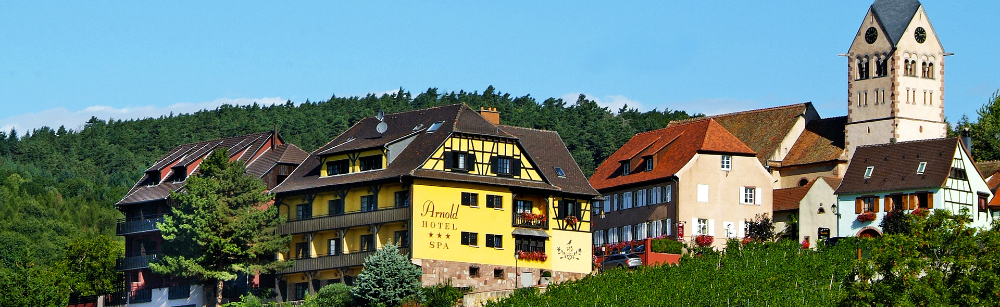
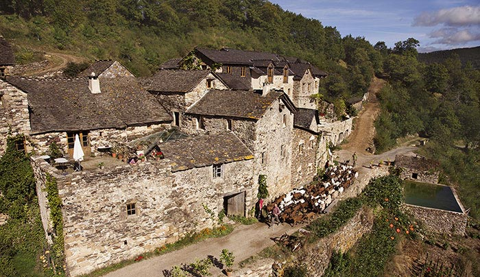

Agile Open France
Saisons Hiver et Eté 2018
Un terrain d’entrainement à suivre ses deux pieds. Il est possible que vous soyez surpris.
Inscriptions saisons Hiver et Eté 2018
Amie supportrice des zones conférencières autonomes temporaires, Ami digito-philolo-choucrouto-phile,
Pour la 11ème année d’affilée: Emmanuel Gaillot, Raphaël Pierquin et Bernard Notarianni ont le plaisir d’organiser la conférence Agile Open France.
Vous aurez l’opportunité de participer cette année à deux événements: Agile Open Hiver et Agile Open Eté.
Vous pourrez très prochainement vous inscrire pour la saison de votre choix, et pourquoi pas, pour les deux saisons :-)
Hiver 2018 - Itterswiller
Comme l’année dernière, Agile Open France Hiver 2018 aura lieu sur soixante-douze heures, les mercredi 24, jeudi 25, vendredi 26 et samedi 27 janvier 2018. Et ça se passera en Alsace, à Itterswiller, à l’Hôtel Arnold***.

Eté 2018 - Ferme des Cevennes
Agile Open France Eté 2018 se déroulera début juillet, à la Ferme des Cevennes. Le format sera sensiblement le même que pour la saison Eté. Le lieu sera différent, nous pouvons donc nous préparer à avoir des surprises.
Notez que serez hébergé dans des chambres collectives.

Participer aux deux saisons
Pour ceux d’entre vous qui veulent s’exercer à suivre leurs passions toute l’année, il est possible de s’inscrire dès maintenant aux deux saisons pour un tarif préferentiel.
Agile Open France, c’est quoi?
Agile Open France est un Forum Ouvert, sur le thème des méthodes agiles de développement logiciel, et du développement au sens large : de logiciels, de personnes, de photos, d’expressions algébriques. Sans oublier les développements durables et les développements limités. Et pendant 72 heures d’affilée, les participant/e/s seront encouragé/e/s à ne se consacrer qu’à une seule et unique tâche : faire ce qui les passionne.
Nous ne savons pas encore dire ce qui nous passionnera cette année, mais nous pouvons raconter ce qu’on a vu s’y passer auparavant.
- Des personnes sont venues de partout en France, et parfois de plus loin encore.
- Celles et ceux qui sont venus l’ont fait dans un esprit bienveillant et curieux.
- Chacun/e a choisi ce qui lui convenait le mieux.
- Des discussions passionnées.
- Des promenades digestives.
- Des débats gesticulés.
- Des siestes multi-tâches.
- Des cascades en mono-roue.
- De la passion.
- Du logiciel et de la poésie.
- Des rendez-vous dans les caves.
- Des chants et des contes.
- Des spécialités alsaciennes.
- De la philo à très grande vitesse.
- Du code projeté en grand sur les murs.
- Des jeux vidéo et des films aussi.
- À toutes les heures de la journée et de la nuit.
- Des expériences audacieuses lancées sans filet.
- Des forums ouverts dans le forum ouvert, en kaléidoscope.
- Des forums ouverts à côté, avant, après, pour faire durer le plaisir.
- Du scandale, des rires, de l’indignation.
- Des combats au sabre, ou à l’épée.
- De l’austérité, de l’iconoclasme.
- Du suspense gastronomique.
- Des réflexions fascinantes.
- Des ateliers studieux, d’autres facétieux.
- Parfois au ras du clavier.
- Parfois haut dans les nuages.
Certain-e-s ont profité de leur très confortable chambre pour se reposer. D’autres ont profité de la nuit pour prolonger la journée.
- Hack, pédagogie, et politique.
- Programmation, conception émergente et contraception.
- Vin d’Alsace, tests automatiques, et parentalité.
- Crossfit, balades et méditation.
Open source, psychologie sociale et fers à souder.
Poire, Framboise, Baeckeoffe.
Nous n’allons pas promettre que ce qui va se passer cette année sera semblable à ce qui s’est passé les années précédentes… mais nous savons avec certitude que cette édition encore sera inédite et qu’elle vaudra la peine d’être vécue.